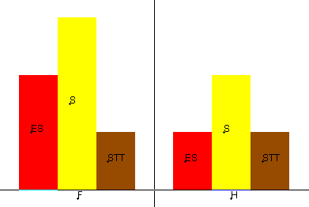

On veut étudier simultanément deux variables qualitatives, par exemple les variables sexe et bac :
| bac | S | ES | STT | S | S | ES | ES | S | STT | S |
| sexe | H | H | H | H | F | F | F | F | F | F |
Pour y parvenir, on crée un tableau de contingence :
| ES | S | STT | |
| F | 2 | 3 | 1 |
| H | 1 | 2 | 1 |
Ce tableau permet de tracer un diagramme en barres juxtaposées (voir démonstration) :
